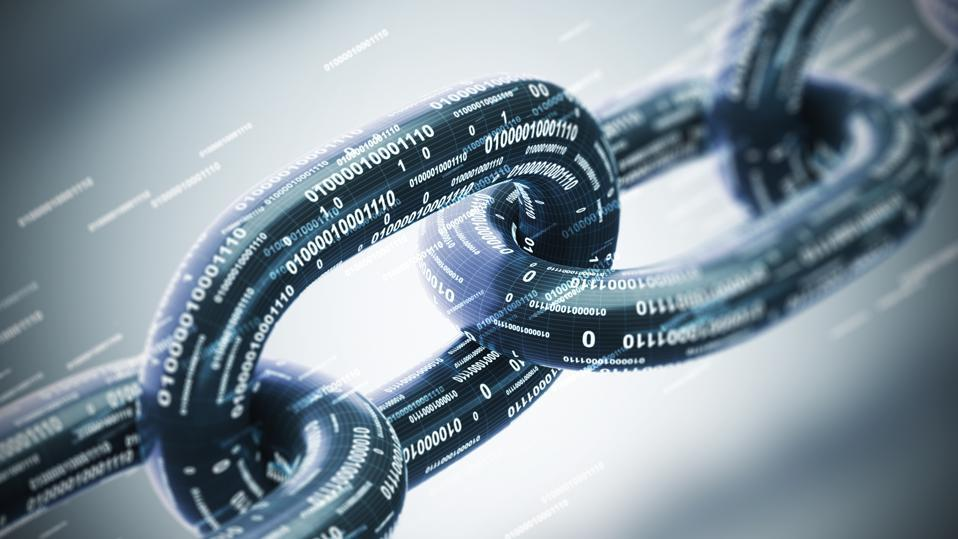

Blockchain.com is a cryptocurrency financial services company. The company began as the first
Bitcoin blockchain explorer in 2011 and later created a cryptocurrency wallet that accounted for 28%
of bitcoin transactions between 2012 and 2020.When the first block of a chain is created, a nonce
generates the cryptographic hash. The data in the block is considered signed and forever tied to the
nonce and hash unless it is mined.
Read more-
The first concept of blockchain dates back to 1991, when the idea of a cryptographically secured
chain of records, or blocks, was introduced by Stuart Haber and Wakefield Scott Stornetta. Two
decades later the technology gained traction and widespread use. The year 2008 marked a pivotal
point for blockchain, as Satoshi Nakamoto gave the technology an established model and planned
application. The first blockchain and cryptocurrency officially launched in 2009, beginning the path
of blockchain’s impact across the tech sphere.
Read more-
Cryptocurrencies are digital currencies that use blockchain technology to record and secure every
transaction. A cryptocurrency (Bitcoin, for example) can be used as a digital form of cash to pay
for everyday items as well as larger purchases, like cars and homes. It can be bought using one of
several digital wallets or trading platforms, then digitally transferred upon purchase of an item,
with the blockchain recording the transaction and the new owner. The appeal of cryptocurrencies is
that everything is recorded in a public ledger and secured using cryptography, making an
irrefutable, timestamped and secure record of every payment.
Read more-
Blockchain’s most well-known use (and maybe most controversial) is in cryptocurrencies.
Cryptocurrencies are digital currencies (or tokens), like Bitcoin, Ethereum or Litecoin, that can be
used to buy goods and services. Just like a digital form of cash, crypto can be used to buy
everything from your lunch to your next home. Unlike cash, crypto uses blockchain to act as both a
public ledger and an enhanced cryptographic security system, so online transactions are always
recorded and secured.
Read more-

The term Bitcoin, for example, is used interchangeably to refer to both the blockchain and the
cryptocurrency, but they remain as two separate entities. The very first blockchain application
appeared in 2009 as Bitcoin, a crypto system using the distributed ledger technology. This also
marked Bitcoin as the first “blockchain.” The aspect of blockchain being used to house this new
digital currency is what brought both entities into association, and what led them quickly into the
spotlight. The Bitcoin blockchain describes only the technology in which the currency is housed,
while the Bitcoin cryptocurrency describes only the currency itself.
Read more-